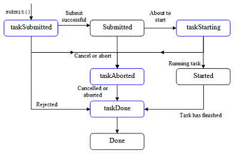

public interface ManagedTaskListener
ManagedExecutorService using the
submit methods and will be invoked when the state of the
Future changes.
Each listener method will run with unspecified context.
All listeners run without an explicit transaction
(they do not enlist in the application component's transaction). If a transaction is required, use a
UserTransaction instance.
Each listener instance will be invoked within the same process in which the listener was registered. If a single listener is submitted to multiple ManagedExecutorService instances, the listener object may be invoked concurrently by multiple threads.
Each listener method supports a minimum quality of service of at-most-once. A listener is not guaranteed to be invoked due to a process failure or termination.
State Transition Diagram
The following state transition figure and tables describe
the possible task lifecycle events that can occur when a
ManagedTaskListener is associated with a task. Each method is invoked
when the state of the Future moves from one state to another.

A. The task runs normally:
| Sequence | State | Action | Listener | Next state |
| 1. | None | submit() | taskSubmitted | Submitted |
| 2. | Submitted | About to call run() | taskStarting | Started |
| 3. | Started | Exit run() | taskDone | Done |
B. The task is cancelled during taskSubmitted():
| Sequence | State | Action | Listener | Next state |
| 1. | None | submit() | taskSubmitted Future is cancelled. | Cancelling |
| 2. | Cancelling | taskAborted | Cancelled | |
| 3. | Cancelled | taskDone | Done |
C. The task is cancelled or aborted after submitted, but before started:
| Sequence | State | Action | Listener | Next state |
| 1. | None | submit() | taskSubmitted | Submitted |
| 2. | Submitted | cancel() or abort | taskAborted | Cancelled |
| 3. | Cancelled | taskDone | Done |
D. The task is cancelled when it is starting:
| Sequence | State | Action | Listener | Next state |
| 1. | None | submit() | taskSubmitted | Submitted |
| 2. | Submitted | About to call run() | taskStarting Future is cancelled. | Cancelling |
| 3. | Cancelling | taskAborted | Cancelled | |
| 4. | Cancelled | taskDone | Done |
| Modifier and Type | Method and Description |
|---|---|
void |
taskAborted(Future<?> future,
ManagedExecutorService executor,
Object task,
Throwable exception)
Called when a task's Future has been cancelled anytime during the life of a task.
|
void |
taskDone(Future<?> future,
ManagedExecutorService executor,
Object task,
Throwable exception)
Called when a submitted task has completed running, either successfully or
failed due to any exception thrown from the task, task being cancelled,
rejected, or aborted.
|
void |
taskStarting(Future<?> future,
ManagedExecutorService executor,
Object task)
This method is called before the task is about to start.
|
void |
taskSubmitted(Future<?> future,
ManagedExecutorService executor,
Object task)
Called after the task has been submitted to the Executor.
|
void taskSubmitted(Future<?> future, ManagedExecutorService executor, Object task)
This event does not indicate that the task has been scheduled for execution.
future - the Future instance that was created when the task was submitted.executor - the executor used to run the associated Future.task - the task that was submitted.void taskAborted(Future<?> future, ManagedExecutorService executor, Object task, Throwable exception)
Future.isCancelled()
method returns false if the task was aborted through another means other than
Future.cancel(boolean).
The exception argument will represent the cause of the cancellation:
CancellationException if the task was cancelled,
SkippedException if the task was skipped or
AbortedException if the task failed to start for another reason.
AbortedException.getCause() method will return the exception that
caused the task to fail to start.future - the Future instance that was created when the task was submitted.executor - the executor used to run the associated Future.task - the task that was submitted.exception - the cause of the task abort.void taskDone(Future<?> future, ManagedExecutorService executor, Object task, Throwable exception)
future - the Future instance that was created when the task was submitted.executor - the executor used to run the associated Future.task - the task that was submitted.exception - if not null, the exception that caused the task to fail.void taskStarting(Future<?> future, ManagedExecutorService executor, Object task)
future - the Future instance that was created when the task was submitted.executor - the executor used to run the associated Future.task - the task that was submitted.Copyright © 1996-2017, Oracle and/or its affiliates. All Rights Reserved. Use is subject to license terms.